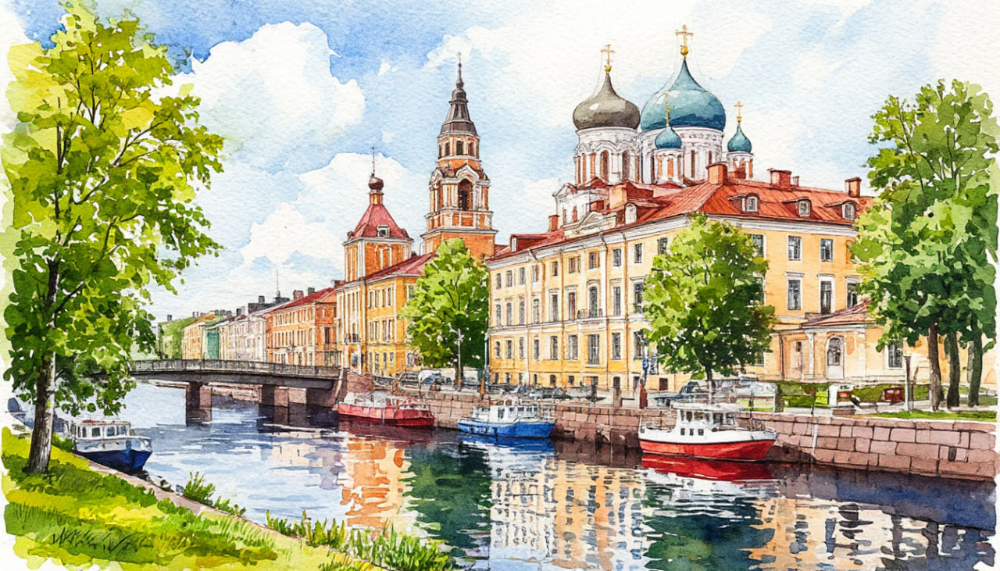

О, град Петра, мне сердцу милый... Выборг и Петербург

Даты тура: 30 апреля - 4 мая | 11 - 15 июня | 16 - 20 июля | 20 - 24 августа
Стоимость тура:
- 26 000 р. - взрослый
- 25 800 р. - пенсионеры/школьники
- по запросу - одноместное размещение
- - Константиновский дворец
- - Кронштандт
- - Выборг и усадьба Киискиля (за доп. плату)
- - Храм Дацан Гунзэчойнэй
- - Егагиноостровский дворец
- - Территория Петропавловской крепости
- - Казанский собор
1 день: Отправление
- 17-00 - выезд из Костромы от ТРЦ "РИО" (ул. Магистральная, 20), правый угол от центрального входа. Ночной переезд
2 день:
- Прибытие в Санкт-Петербург. Встреча с экскурсоводом.
- Завтрак в кафе города.
- Трассовая экскурсия «Дворцы и парки на берегу Финского залива».
- Экскурсия в Константиновский дворец Стрельни познакомит Вас с исторической резиденцией великих князей Романовых. Ныне комплекс носит название – Дворец конгрессов. Стрельнинский дворцово-парковый ансамбль был задуман Петром Великим в 1715 году. Над проектом работали известные европейские архитекторы, создавшие Большой Каменный Стрельнинский дворец и парки. По замыслу первого русского императора резиденция должна была затмить даже Версаль.
- Экскурсия «Возрожденный замысел Великого Петра»
- Вы познакомитесь с парадными залами и гостиными Константиновского дворца, узнаете об истории создания дворцово-паркового ансамбля в Стрельне, о жизни его владельцев, о трагических временах упадка и разрушения, о грандиозных восстановительных работах и о сегодняшнем дне Государственного комплекса «Дворец конгрессов»
- Обед в кафе.
- Экскурсия в Кронштадт. По пути к пункту назначения мы проедем через большой подводный туннель над главной дамбой, которая спасает Санкт-Петербург от наводнений.
- Прогулка по парку на «Острове фортов». Во время прогулки Вы пройдете по Аллее героев российского флота, посетите Маяк памяти .На маяке запечатлены имена и звания 200 героев — адмиралов, офицеров, мичманов и матросов, начиная с эпохи Петра I и заканчивая нашим временем. Вы увидите и сможете прокатится на панорамных качелях, а также с берега парка «Остров фортов» открывается удивительный вид. Здесь можно потеряться во времени, наблюдая за гаванью в стационарные смотровые бинокли. Сделаем остановку у Нулевого километра - символической точки отсчета, показывающая расстояние от «колыбели российского флота» — Кронштадта — до ключевых отечественных и зарубежных портовых городов.
- А далее Вы отправитесь на Остров Котлин, который находится в Финском заливе и защищает Петербург с моря. За свою уникальную атмосферу Кронштадт внесён в список всемирного наследия ЮНЕСКО.
- В Кронштадте вас ждёт пешеходная экскурсия по знаковым местам. Увидите Синий мост, на котором расположен футшток, по нулевой отметке которого ведется отсчет всех глубин и высот на территории бывшего Союза. Здесь есть свой Гостиный двор, своё Адмиралтейство, Летний сад и даже собственная полуденная пушка. Вы пройдётесь по Петровскому доку, Якорной площади, а в свободное время сможете вернуться в наиболее понравившиеся места.
- Посещение Никольского морского собора.
- Размещение в отеле. Свободное время.
- 22:30 Ночная экскурсия «Поющие мосты Петербурга»
- В это дивное, загадочное, чуть мистическое время так необычно смотрится знакомый город, его парадный исторический центр, его удивительные подсвеченные контуры мостов. Кульминацией экскурсии является разведение мостов, когда вздымаются вверх их могучие «крылья» и начинают свой проход караваны судов, идущие своим путем по реке в море... Стоимость* 1500 руб./взрослый, 1 300 руб./дети 15 лет.
- * Оплата при бронировании тура или сопровождающему группы.
3 день:
- Завтрак в отеле.
- Свободный день
- ИЛИ
- Экскурсионный день «Выборг + Усадьба Киискиля» - 1900 руб./чел. – все категории. Сегодня Вас ждут северные сказочные ландшафты, необычная архитектура, которую вы можете увидеть только в этой экскурсии, дегустации и многое другое.
- А первая наша остановка в усадьбе.
- Экскурсия в усадьбу Киискиля. Старинные здания, северный ландшафт, новые постройки в аутентичном стиле финской деревянной архитектуры, живописное побережье Финского залива, удивительные истории для взрослых и детей.
- В программе вас ждет:
- - обзорная экскурсия, во время которой Вы услышите увлекательный рассказ об истории места, его обитателях и удивительных поворотах в их судьбах, возрождении усадьбы и уникальных реставрационных работах;
- - посещение старинного погреба, где происходит выдержка старинных сортов пива. Именно там зреет русский имперский стаут.
- - дегустация пива из пивоварни: светлое - кёльш, пейл эль, стаут, вишневое и сидра
- - посещение питомцев усадьбы – яков и коров редкой породы хайленд, которые создадут вам новогоднее настроение. Редкие коровы шотландской породы хайленд, исключительно фотогеничные, ласковые, добрые и любящие людей. Чистое тёплое счастье.
- Переезд в Выборг.
- Обед в кафе.
- Путь пройдёт через старые площади, уютные улочки и исторические кварталы. Вы пронесётесь сквозь века, прогуливаясь по гранитной брусчатке среди средневековой архитектуры, где когда-то бывали Пётр I, Екатерина II и шведские короли. Во время экскурсии Вас ждет знакомство с Рыночной площадью, Собором Петра и Павла, Спасо-Преображенским собором, бастион «Панцерлакс», башней Ратуши. А еще мы проведем вас к Усадьбе бюргера, где всё ещё витает дух Средневековья, покажем Дом цирюльника, стоящий на мощном скальном выступе, и откроем секрет названия Башни толстой Катарины.Шагая по истории Выборга, в конце экскурсии подойдём к истокам города. На Ратушной площади с видом на Замковый остров вы представите времена, когда шведы основали Выборг, построив замок в Финском заливе. Вы увидите средневековый рыцарский Выборгский замок — символ города и сможете сделать красивые фотографии. История средневекового Выборга – это, в первую очередь, история войн.
- Свободное время на приобретение сувениров.
- Посещение в свободное время магазина "Лавка вкусностей" - Местечко со вкусностями в стиле Средневековья!
- На витринах выложены всевозможные пряники, орехи, редкие сорта варенья, например, с еловыми шишками, мёд, пиво, вяленое мясо, кофе, различные чаи, крендели разных видов, в общем те вкусности, которые издавна считаются продуктовой «визитной карточкой» края. Главный продукт лавки – крендель, который является аппетитным символом Выборга! Его рецепт впервые прибыл в Выборг в далёкие Средние века и выпекали его монахи францисканцы.
- Возвращение в отель.
4 день:
- Завтрак в отеле.
- Сбор группы в автобусе в назначенное сопровождающим группы время.Выезд в центр города.
- За дополнительную плату (по желанию):
- Экскурсия на прогулочном кораблике по рекам и каналам Санкт-Петербурга - «Северная Венеция». Стоимость* - 1500 руб./взрослый, 1300 руб./дети до 15 лет.
- *Оплата при бронировании тура или сопровождающему группы
- Далее... Остановка у буддийского храма «Дацан Гунзэчойнэй» – одного из самых необычных сооружений в городе. Храм был построен в начале XX века при поддержке императора Николая II и представителя Далай-ламы XIII в России Агвана Доржиева. Петербургский дацан по праву считается одним из самых красивых в Европе. Храм построен из гранита, богато декорирован, его витражи были созданы знаменитым художником Николаем Рерихом.
- Экскурсия по Елагиному острову. Вы увидите Кухонный корпус полукруглое двухэтажное здание со скульптурами античных богов и героев, Конюшенный корпус, Фрейлинский.
-
Экскурсия в Елагиноосстровский дворец «Парадная анфилада». Во время экскурсии вы узнаете об истории появления летней императорской резиденции на Елагином острове, приобщитесь к работе лучших отечественных мастеров-декораторов первой четверти XIX века и побываете в личных покоях Императрицы Марии Федоровны.
- Обзорная экскурсия по городу «Град позолоченных соборов, Дворцов изящных и палат…»: знакомство с историей города Петра от основания до наших дней, с великолепными архитектурными ансамблями парадного центра Петербурга ( Обзорно - Стрелка Васильевского острова, Университетская, Адмиралтейская и Дворцовая набережные , Марсово поле , Невский проспект , Троицкая площадь, Каменностровский проспект ). Вы посетите главный кафедральный собор города – Казанский собор.
- Экскурсия по территории Петропавловской крепости «Здесь будет город заложен…»: бастионы и куртины XVIII века, самое высокое сооружение города - Собор Святых Петра и Павла, являющееся символом Санкт-Петербурга (внешний осмотр), монетный двор, здание тюрьмы Трубецкого бастиона - главной политической тюрьмы царской России.
- 17-00 Поздний обед в кафе.
- 18-00 Выезд из Санкт-Петербурга
5 день: Возвращение.
Прибытие в Кострому в первой половине дня (ориентировочно)
- - проживание в гостинице *
- "Cosmos Saint-Petersburg Pulkovskaya Hotel 4*" (Номер реестровой записи: С782024005413)
- - проезд на автобусе
- - питание: 3 завтрака + 2 обеда
- - услуги гида-экскурсовода
- - экскурсионная программа
- - автобусное обслуживание по программе тура
Дополнительно оплачиваются (по желанию):
- - Ночная экскурсия по городу. Стоимость - 1500 руб./взрослый, 1300 руб./дети до 15 лет. Оплата при бронировании тура или сопровождающему группы.
- - Экскурсия на прогулочном кораблике «Северная Венеция». Стоимость - 1500 руб./взр., 1300 руб./дети до 15 лет. Оплата при бронировании тура или сопровождающему группы.
- - Экскурсионный день «Выборг + Усадьба Киискиля». Стоимость - 1900 руб./чел. – все категории. СТРОГО ПРИ БРОНИРОВАНИИ ТУРА.
- Для бронирования необходимы данные паспорта РФ и свидетельства о рождении, если с вами путешествуют дети
- Предоплата – 50% от стоимости тура. Остаток за 30 дней до даты выезда.
- Любой тур можно оформить не выходя из дома. Подробнее: Тут
Стоимость тура не зафиксированы и могут быть изменены в большую или меньшую сторону в зависимости от уровня спроса в любой момент.
Время начала экскурсий и их порядок указано ориентировочно.
Фирма-исполнитель оставляет за собой право замены экскурсий без уменьшения общего объема экскурсионной программы.
По вопросам бронирования обращайтесь: